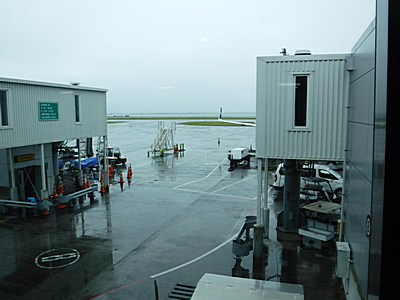
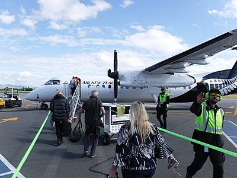

釣行日誌 ＮＺ編 「一期一会の旅：A Sentimental Journey」
８年ぶりのニュージーランド
11/21(WED)-1
映画の続きを見つつ、朝食を美味しくいただいていると、オークランド空港に近づいて高度を下げている旨のアナウンスがあった。シートベルトを締め、とうとうニュージーランドがもうすぐかと感慨深かった。
午前9時過ぎ、ほぼ定刻にオークランド空港に降り立ったボーイング機を降りて、入国審査を無事済ませ、バゲージクレームで何事も無く出てきたバックパックを受け取り、トロリーに載せてから、最大の懸案である税関の荷物検査に向かう。この頃は読み書きに欠かせなくなっためがね型ルーペを頼りに書いた申告書を読んだ係官からは、一般の乗客とは別の部屋に行くように指示された。そこで大型の検知器を通されたバックパックは、台の上に載せられ、別の係官がウェーダーなどを見せてくれと言う。ウェーダー、ウェーディングシューズを取り出し、念入りに洗ってきた旨を説明すると、一通り見た後で、これらは問題なし、との御託宣。それはそうだろう、ウェーダーは外の物干しに吊して水道ホースで洗って乾かし、シューズは風呂場で洗剤を付けてタワシで何度もゴシゴシ洗い、ビブラム底の隙間に挟まった小石は爪楊枝で取り除くという涙ぐましい努力をしてきたのだから。
で、次に係官は、ランディングネットは持ってないかと重ねて訊ねてきた。お！そうだそうだ。ハミルトン近郊のスプリングクリーク用に、日本の渓流サイズのネットをバックパックに入れてあったで、それを取り出すと、ネットに残っていた葉っぱの枯れクズが２つ３つ、ハラハラと台の上に落ちた。
「うわ！こりゃマズかったか！？」
一瞬ドキッとしたが、係官はひょいとネットを手に取って一瞥し、
「OK。」
と言ってくれた。いやぁちょっと心臓に悪かったな.....。などというようなやりとりの後、ようやく到着口から出て、国内線ターミナルを目指す。ここで時間があれば、国際線到着ロビーの中にある Vodafone shop にて、予約しておいたガラケーを購入しておきたかったのだが、クライストチャーチ行きの便の時間が迫っていたので、とりあえず店に寄って、また後日、11/26（月）の昼過ぎに買いに来るからと店員さんに伝えた。
オークランド空港は来る度に立派に増築・改装されていて驚かされるのだが、国際線と国内線ターミナルとを結ぶ通路が単なる歩道で屋根が無いのは昔からそのままである。天気が良ければ歩いて15分もかからないのだが、にわか雨、それも激しい驟雨が多いこの街では、大荷物を背負いながら豪雨に遭ったらかなわないなと思う。
国内線ターミナルに着き、オークランド（12:00発）→ クライストチャーチ（13:25着）NZ539便を待つ。11時半頃になり、搭乗ゲートに向かう時には、案の定にわか雨が降っていた。
NZ539便に乗り、ようやくクライストチャーチまでたどり着いた。遅くなったがここでお昼を食べることにして、カフェでサンドイッチとオレンジジュースを買う。ボリュームがあるので２つも食べると満腹になる。ここの空港もだいぶリニューアルされて美しく広くなっていた。
クライストチャーチ（16:25発） → ホキティカ（17:10着）NZ8836便は、前回2010年に乗った機体と思うとかなり大きく、座席は4列掛けであり、席番から定員は50名ほどだと思われた。
時間が来て、ターミナルを出て滑走路を歩いて機内に乗り込む途中に写真を撮っていたら係員からダメダメと言われてしまった。（笑）

釣行日誌ＮＺ編 目次へ
サイトマップ
ホームへ
お問い合わせ